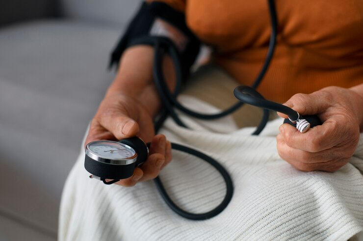
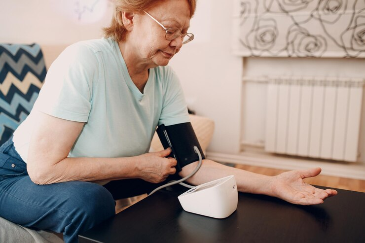

Improve your blood pressure with this simple nighttime tip.

I always say that high blood pressure is a warning sign no one should ignore. The initial symptoms may appear as fatigue, frequent headaches, dizziness, and a lack of energy in daily life. And what helps maintain a healthy heart and a life full of strength? Of course, a balanced lifestyle and controlled blood pressure! This is the key to lasting health, an active body, and vitality that improves the quality of life for everyone.
Properly selected physical exercise plays a crucial role in maintaining cardiovascular health. It improves blood flow to organs and tissues, activates respiration and metabolism, and strengthens the nervous and muscular systems. Additionally, it contributes to emotional well-being. There is no doubt that regular physical activity influences the intensity of blood circulation and overall metabolism, helping to maintain healthy blood pressure. Specific exercises, such as walking, swimming, or yoga, can have beneficial effects on the heart and blood vessels. The combination of physical activity, medication therapy, and a balanced lifestyle is a highly promising strategy to control hypertension and improve quality of life.
When blood pressure rises, a series of issues arise, from constant fatigue to headaches, dizziness, and even more severe complications like cardiovascular problems. However, contrary to what many people believe, the main cause of hypertension today is not just age but also external factors such as stress, excessive salt intake, environmental pollution, and a sedentary lifestyle. The good news is that with appropriate lifestyle changes and medical attention, it is possible to control blood pressure and reduce associated risks.
List of beneficial products to control blood pressure:
- **Garlic:** Rich in antioxidants and compounds that help reduce inflammation, improve blood circulation, and maintain healthy blood vessels.
- **Lemon:** An excellent source of vitamin C and antioxidants, which helps lower blood pressure, reduce cholesterol, and strengthen the cardiovascular system.
- **Aloe:** Aloe juice improves digestion and helps eliminate toxins, indirectly supporting cardiovascular health and overall well-being.
- **Nuts:** Almonds, walnuts, and pistachios contain magnesium, potassium, and healthy fats that help regulate blood pressure and improve heart health.
- **Fish:** Omega-3 fatty acids found in fish like salmon and mackerel reduce inflammation and improve the elasticity of blood vessels, promoting heart health.
- **Eggs:** A rich source of high-quality protein and essential nutrients, such as choline, contributing to energy and overall metabolic health.

Health specialists are confident that proper self-care, regular doctor visits, and a balanced diet contribute significantly to cardiovascular health. A healthy lifestyle, combined with moderate exercise and stress control, is the key to keeping blood pressure under control without compromising heart health.
To accurately identify the causes of hypertension, health specialists recommend visiting a specialized doctor. Additionally, they suggest supplementing treatment with natural products that help stabilize the balance of essential vitamins and minerals in the body, such as potassium and magnesium, which are crucial for maintaining blood pressure control.
This preparation is known as Glyco Balance.
Our offer is not intended to diagnose, treat, cure, or prevent any disease.
The offer does not constitute medical advice and should not be considered a substitute for medications or other treatment methods prescribed by a doctor or healthcare professional. Glyco Balance has a natural composition consisting of:
Glyco Balance has a natural composition consisting of:
†Results vary depending on starting point, goals and effort. The testimonials featured may have used more than one Glyco Balance product or extended the program to achieve their maximum results.
Consult your physician and follow all safety instructions before beginning any exercise program or using any supplement, nutrition plan or meal replacement product, especially if you are pregnant, breastfeeding, or if you have any unique or special medical conditions.
The contents on our website are for informational purposes only, and are not intended to diagnose any medical condition, replace the advice of a healthcare professional, or provide any medical device, diagnosis, or treatment.